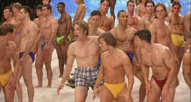

| Real
Blonde/B+,B+ |
| Paramount/1997/105/WS 1.85 |
New York based writer /director Tom DeCillo
knows New York and knows actors. His delightful comedy, The Real Blonde, capitalizes on
aspects of both. You can almost smell the city streets as DeCillo captures the beat and feeling of Manhattan in concise,
knowledgeable strokes. It's a spoof on marginal actors and their hopes and desires. The trials
and tribulations of making it, professionally or in bed, is prime material for comic invention, and
DiCillo dishes out his satire with a velvet sword.
 |
| No, it's not a beach blanket movie.
©Paramount |
Joe is one of the legion of New York City
actors keeping afloat by waiting tables. He's in a permanent relationship with Mary that's in
danger of getting lost under the covers. Time is slipping away too quickly. Joe's desperation is
showing more wrinkles than his waiter's tux.
Elements of the desperation to succeed are delivered in choice rhythms
balanced by visual delight and clever dialogue. Joe's bit part in a Madonna music video is a
wonderfully droll. Watching him work as a waiter adds its share of comic pleasure. Mary throws a
few wonderful high kicks is learning to defend herself. Supporting characters like Ernst the maitre
de and agent Taylor add to the comic texture.
Tom DiCillo has a fine imagination, writes good scripts, and displays the
timing of a fine director. The Real
Blonde is a natural partner to DeCillo's earlier winner Living in Oblivion, which was about an Indie film shoot.
The Real Blonde may actually have more laughs than Oblivion, but it's clearly not as
original. Great beat, wonderful rhythms.
Matthew Modine stars as Joe. Modine is cast perfectly. He
does hapless very well. Indie pro Catherine Keener finds all the right beats for Mary. Maxwell
Caulfield has some funny moments as Bob and Elizabeth
Berkley is delicious as Tina. Kathleen Turner adds breathy support as agent Dee Dee Taylor. Denis
Leary takes some good hits as a self defense teacher..
Excellent transfer although not anamorphic. Images are consistently sharp
without excessive edge ringing. Very nice balance of colors. Delicate colors retain their
subtleties and bright colors are delivered with punch. Excellent range of skin tones. Good blacks
and shadow detail. Lighting preserved in various scenes. Dolby Digital 5:1 surround catches the nuances of the city.
|
|
|
|

Selections from the Feature Archive include articles on
Akira Kurosawa, Frank
Darabont, Blonde Bimbos, Hollywood Street Gangs, or Vietnam: The
Hollywood Pariah, and many more....

Catch the Hollywood take on Blonde Bimbos by clicking on the
image above.
 
ISF Monitor Calibrations in the
Tristate New York area. Lots of hardware info and frequent hardware peaks from video expert Kevin
Miller. They may be judgmental, but that's the point, isn't it. Lots of DVD reviews plus news and
more.

DiscReviews.com
is a new DVD review site
with a slick interface.

Nearly 40 key software and
hardware companies representing leading consumer electronics giants, major movie studios home video
and music video units have joined forces to establish the DVD Video Group.

DVD Easter Eggs
How do you take them? Fried or scrambled. Get the secrets
here.

Lady Eve,
The (SE) A,C+

Wonderful classic comedy from writer/director Preston Sturges. Henry Fonda and Barbara Stanwyck
star.
|